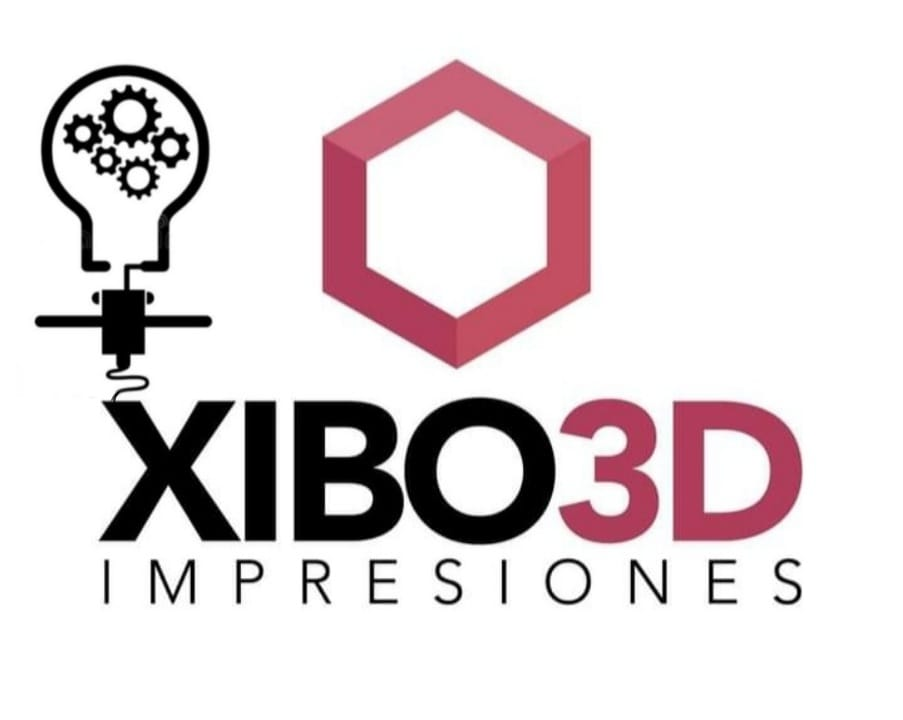

Somos un micro emprendimiento reciente, pero lo suficientemente eficaz para llevar a cabo este proyecto. Si bien nuestra incursión por la tecnología, data desde hace tiempo, con los años nos perfeccionamos. Llevamos varios de ellos, estudiando y trabajando en informática, y todo lo relacionado con la tecnología. Hace cuatro años empezamos a insertarnos en este rubro de las impresiones 3D de lleno. Hasta llegar al día de hoy que decidimos expandirnos y darnos a conocer. Nos consideramos jóvenes innovadores y apasionados por el mundo de la tecnología y la impresión 3D, trabajamos con el objetivo principal de acercar las oportunidades que abren estas nuevas tecnologías a los hogares. Ofreciendo un servicio integral de consultoría, diseño e impresión 3D. Para esto ponemos a tu servicio tecnología de punta, ofreciendo múltiples alternativas para que puedas transformar tu idea en un objeto real. A través de nuestro servicio de impresión 3D, te invitamos a imprimir lo imposible y a convertir tus proyectos de digital a real.
Nos dedicamos a desarrollar proyectos en base a impresión 3D. Para esto contamos con un equipo de trabajo, para que puedas diseñar esa idea o proyecto y guiarte en todo el proceso para convertir un archivo 3D en un objeto físico, con alto nivel de detalle y a todo color.
